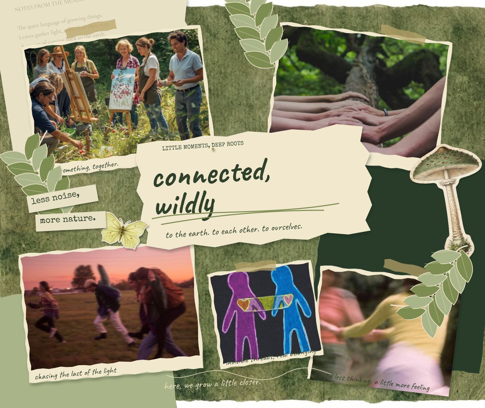
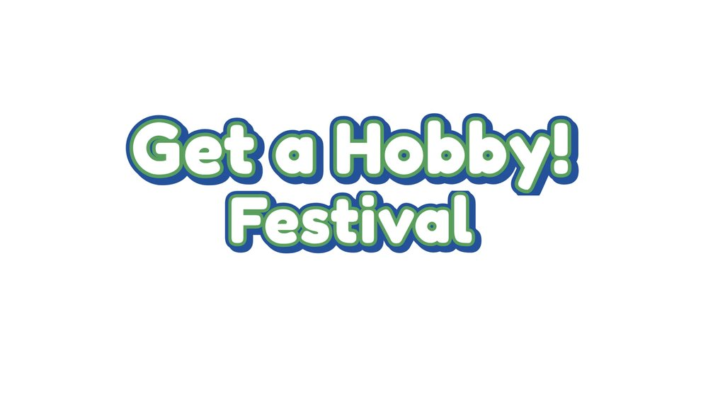
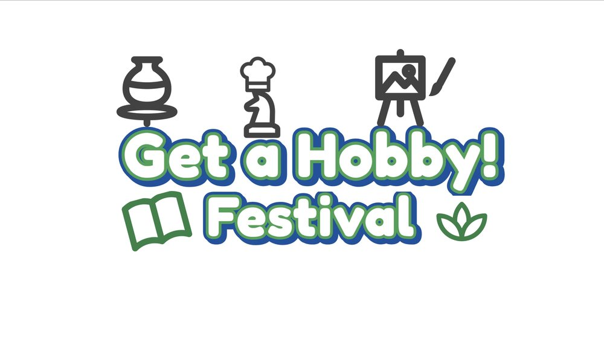
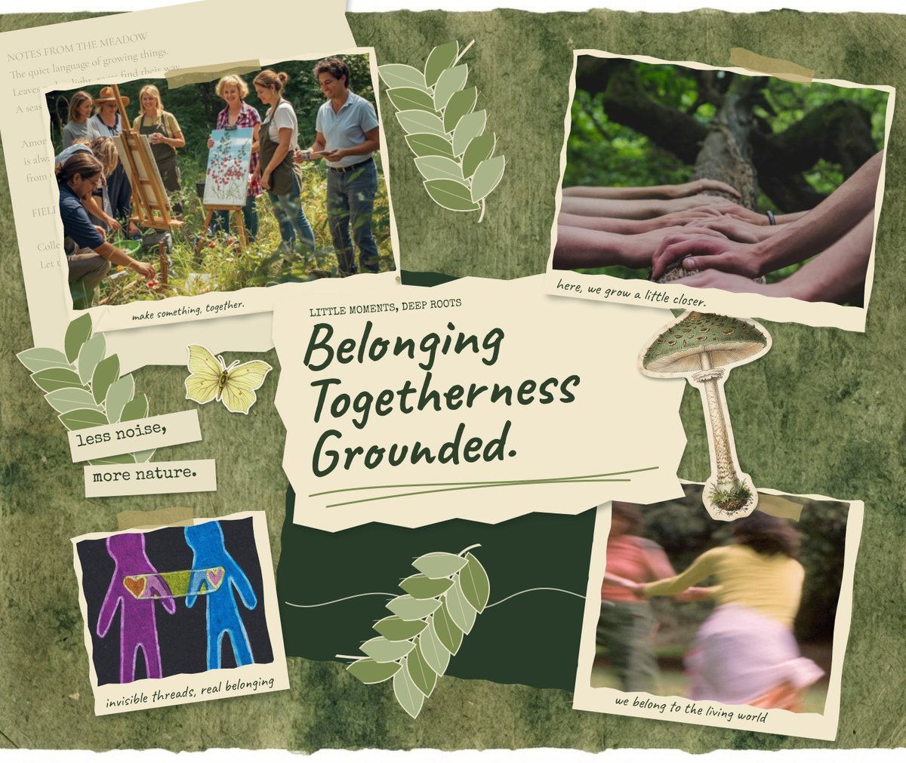
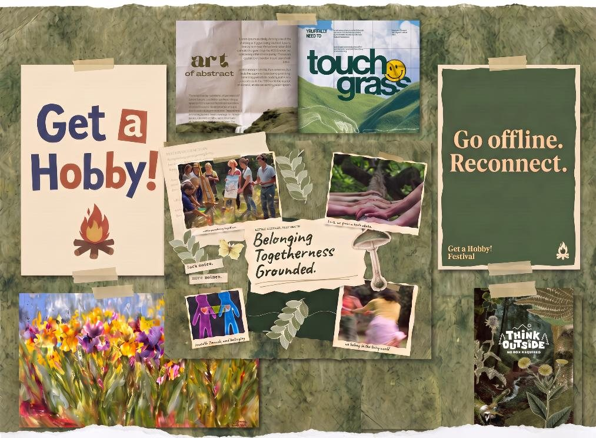
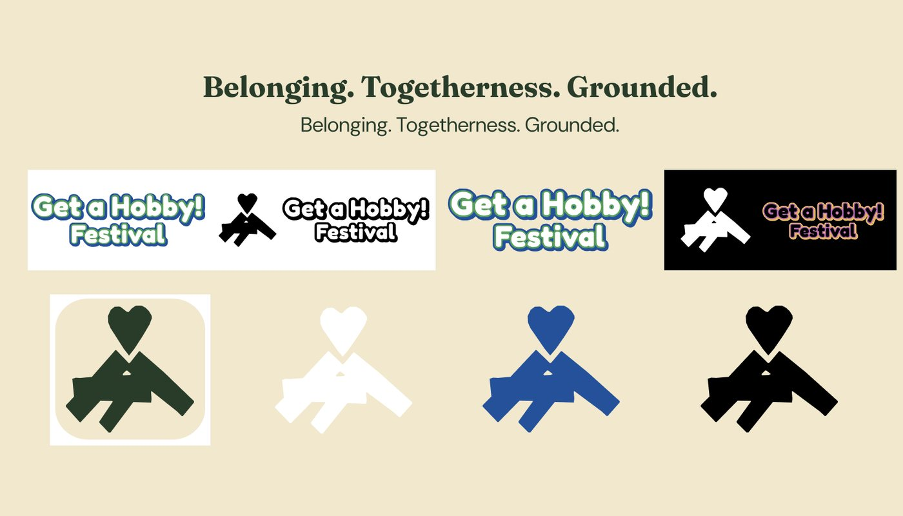
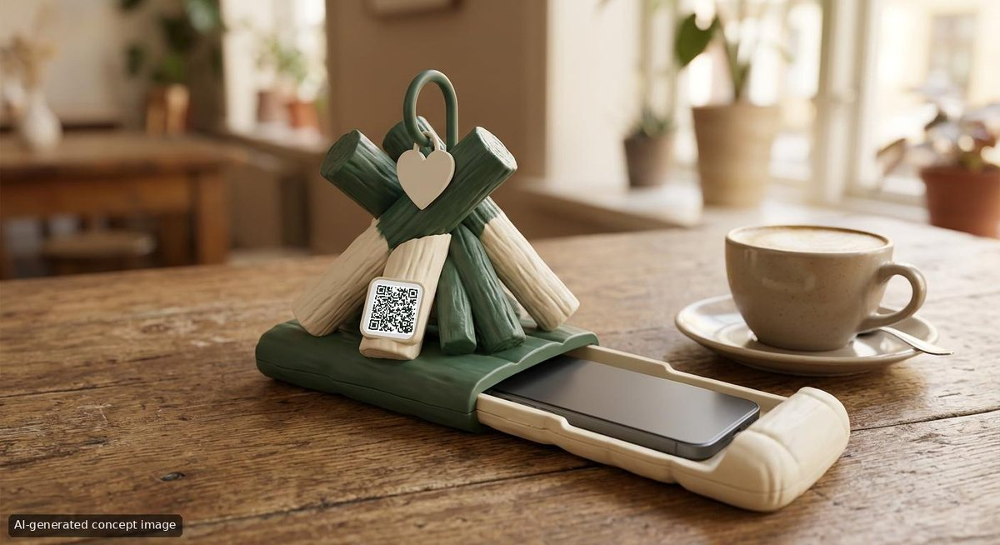
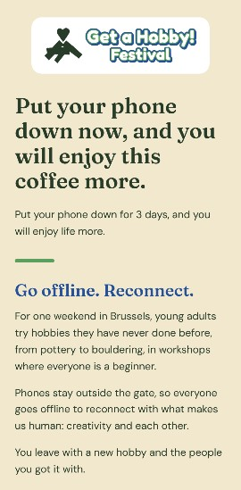
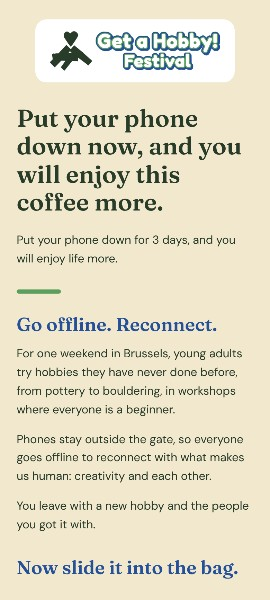

I picked the cause: young people aged 21–35 are lonelier than ever, and social media gives them a fake feeling of being connected. I wrote it as a “how might we”: a festival with workshops where lonely or inactive people show up without their screens. I started from the cause so that every later choice, medium and identity, could be checked against it.
Who is it for
I made one persona, Emma, 31, who works in a café. She wants friends with the same interests who last longer than a weekend, but she is afraid that only people who have done a hobby for years will come and that she will be too shy to join. Her journey runs nervous but excited, then intrigued and entertained, then happy she left her comfort zone. I positioned the festival against music festivals, where people come with their own group and take pictures for Instagram, and chose “no phones” as the one thing that is different.
What’s the big idea
My first concept was a blank wooden phone that you swap for your phone at the gate. It is also your ticket, and new friends write their names on it. The name was “Get a Hobby! Fest” and the tagline “Get a Hobby!”.
Dead end: I dropped the wooden phone completely and rewrote the concept around going offline to reconnect with creativity and each other.
Make it visual
I made three moodboards for three directions: connection with others, going offline, and learning a new skill. I also drew my first text logo: round white letters with a green and blue outline, inspired by the colours of a jersey, with small black hobby symbols bursting out of it. “Fest” became “Festival”, centred under “Get a Hobby!”, and the letters were made softer.
Dead end: the burst of hobby symbols. It did not return in the identity; the identity became one mark plus the wordmark (see versions).

Moodboard direction “connected, wildly” (not chosen)

Text logo v1

Text logo v2 with hobby symbols (dead end)
Three directions, one choice
At the mid-pitch I presented the three moodboards and chose the direction “Belonging. Togetherness. Grounded.” These three words became my test for every later choice: blue for belonging, cream for togetherness, forest green for grounded, and a fresh green for something new growing.

The chosen moodboard

Moodboard in the final pitch (D-4)
From logo to system
For D-2 I cut a campfire out of paper with a heart above it, and drew the soft wordmark. I built the system around it: four colours with one job each, Caveat for headings and Special Elite for body text, and logo versions in colour, black, negative and on a photo. After the D-2 feedback I changed the mark and later the fonts (see versions and feedback).

Identity board v1, 20 Oct 2026
Let them use it
I chose a core touchpoint in space: a small campfire object with a sleeping-bag drawer on the tables of the university coffee bar, with a QR code that opens a one-page website. I could not build a physical model in time, so the object is shown as a labelled AI concept image. The page and the QR code are real, hosted on GitHub Pages. I walked through the key moment as Emma myself and found three problems (see feedback), which gave landing page v2.

Concept image of the object, 27 Oct 2026 (AI-generated)

Landing page v1, 27 Oct 2026

Landing page v2, with closing line, 28 Oct 2026
Test again, then go public
The first tests with real people. The earlier “test round” was my own walkthrough, so this is the first time anyone else used the touchpoint.
What happened: I ran a dorm/ kot test with three people (aged 23, 27 and 31), one at a time, about ten minutes each, on a test sheet with three tasks (the poster, the object on the table, the page behind the QR code) and three questions (the festival in one sentence, a card sort, would you go). I wrote down what they said and did.
Pitch and polish
The final pitch was a pitch of problem, concept, identity, the key moment with a live QR demo, what the walkthrough changed, the channels and a close. For the polish I made the final package: a launch poster, a teaser story, a phone-bag tag and a six-second motion piece, a channel plan with a campaign rhythm, and the brand guidelines. I also rebuilt the landing page as v3 in the final identity.
 Get a Hobby! Festival
Get a Hobby! Festival